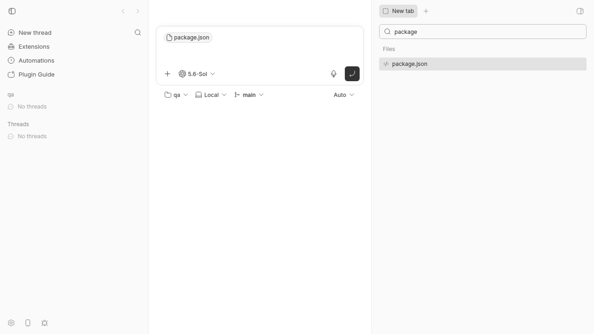
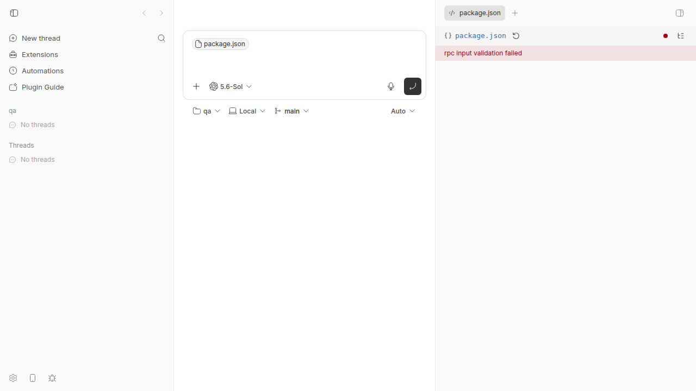

#2519 · Plugin file openers built before experimental_hostId fail with “rpc input validation failed”
Verdict: REPRODUCED · Root-cause confidence: high
1. TL;DR
BB adds experimental_hostId to a workspace source when a draft has no environment.
A strict opener from before this field rejects the complete RPC input before its handler runs.
The dispatcher returns HTTP 400, and the File Editor shows only the raw validation message.
The current opener accepts the same payload, so the failure needs an old strict contract.
2. Claims vs findings
| Claim from the issue | Status | Evidence |
|---|---|---|
An environment-free draft source gets experimental_hostId. | Verified | The app source adds the field at lines 186–198. The live default-host project sent it. |
| A strict pre-field opener rejects the request. | Verified | The isolated test returned HTTP 400 with “Unrecognized key: experimental_hostId.” |
| The failure comes from the plugin contract, not a stopped plugin. | Verified | The running File Editor returned invalid_input. A stopped plugin uses HTTP 503. |
The file tab shows only rpc input validation failed. | Verified | The live application screenshot shows the bare red message. |
| The current opener accepts the identical payload. | Verified | After the current field returned, the same RPC request returned HTTP 200 and file content. |
| A normal environment-backed thread omits the field. | Verified | The app adds the field only when environmentId equals null. |
The exact external monaco plugin has the stated old source handler. | Unverified | The issue gives no repository URL or commit. The equivalent strict contract reproduced the failure. |
| Removal of only the new field makes that external plugin return a handler error. | Unverified | The external plugin source was not available. This claim does not change the confirmed schema failure. |
3. Environment
- BB commit:
ad79bbb5ec909524f8f281e62d860c588a86f332. - Latest checked main:
fbc556d7777518be4fdae58268c415344de79462. - OS: Linux 7.0.0-29-generic, x86_64.
- Node: 24.18.0. pnpm: 9.15.0.
- Providers: Codex 0.150.1, Claude Code 2.1.247, Pi 0.84.3, Cursor 2026.08.11, and Grok 1.0.5.
- App:
localhost:11985. Server:localhost:19985. Host daemon:localhost:27985. - The isolated data directory was
~/.bb-dev/tmp-bb-report-2519-revise-k1o5uq-7ed158d9f8e7. - The revised live run used host
host_nprkt8ejztand projectproj_mwmzugdgaj.
Full details: environment.txt.
4. Minimal reproduction
This reproduction changes only the current File Editor schema. The change makes it equal to the public pre-field schema.
- Check out the base commit. Install dependencies and build BB.
git checkout ad79bbb5ec909524f8f281e62d860c588a86f332 pnpm install --frozen-lockfile --prefer-offline pnpm exec turbo run build
- Download the report artifacts. Check the patch before any source change.
report_base=https://get-bb.github.io/reports/issues/2519/repro curl -fL "$report_base/legacy-schema.patch" -o /tmp/issue-2519-legacy-schema.patch curl -fL "$report_base/file-opener-legacy-source-repro.test.ts" \ -o apps/server/test/services/plugins/file-opener-legacy-source-repro.test.ts git apply --check /tmp/issue-2519-legacy-schema.patch && \ printf 'git apply --check: OK\n'
Verified output:
git apply --check: OK
- Run the automated repro before the development application.
(cd apps/server && pnpm exec vitest run \ test/services/plugins/file-opener-legacy-source-repro.test.ts)
The command exits with status 1 because the expected HTTP 200 response is HTTP 400.
- Apply the legacy schema patch.
git apply /tmp/issue-2519-legacy-schema.patch
- Start the isolated development application.
scripts/bb-dev-app current eval "$(scripts/bb-dev-app env)"
- Create a local Git project and register it on the isolated server.
qa_path=$(mktemp -d /tmp/issue-2519-qa-XXXXXX) git -C "$qa_path" init printf '{"name":"issue-2519-repro","private":true}\n' > "$qa_path/package.json" git -C "$qa_path" add package.json git -C "$qa_path" -c user.name=Repro -c user.email=repro@example.invalid commit -m init host_id=$(pnpm --silent bb:dev machine list --json | jq -r '.[0].id') test -n "$host_id" && test "$host_id" != null payload=$(jq -n --arg p "$qa_path" --arg h "$host_id" \ '{name:"qa",source:{type:"local_path",path:$p,hostId:$h}}') project_id=$(curl -s -X POST "$BB_SERVER_URL/api/v1/projects" \ -H 'content-type: application/json' -d "$payload" | jq -r .id) test -n "$project_id" && test "$project_id" != null pnpm --silent bb:dev plugin enable monaco-editor printf 'host_id=%s\nproject_id=%s\n' "$host_id" "$project_id"Verified output from the revised run:
monaco-editor@0.1.0 running host_id=host_nprkt8ejzt project_id=proj_mwmzugdgaj
- Open a new draft in the
qaproject. Do not start an environment. - Press
Ctrl+T. Search forpackagein the file search. - Click
package.json. The file tab shows the RPC error.


Exact RPC result
HTTP/1.1 400 Bad Request
content-type: application/json
{"ok":false,"error":{"code":"invalid_input","message":"rpc input validation failed","issues":[{"message":"Unrecognized key: \"experimental_hostId\"","path":["source"]}]}}
Restore the current schema and reload the plugin. The identical request returns HTTP 200.
git apply -R /tmp/issue-2519-legacy-schema.patch pnpm --silent bb:dev plugin reload monaco-editor
See live-rpc-control.txt for both responses.
Automated failing repro
Save this file at apps/server/test/services/plugins/file-opener-legacy-source-repro.test.ts.
Step 3 runs this test before the development application starts.
This order prevents a native SQLite module from a different Node ABI from hiding the assertion.
pnpm exec vitest run test/services/plugins/file-opener-legacy-source-repro.test.ts
The expected file-open response is HTTP 200. The actual response is HTTP 400.
FAIL |@bb/server| test/services/plugins/file-opener-legacy-source-repro.test.ts
AssertionError: expected { status: 400, … } to deeply equal { status: 200, … }
Received error code: invalid_input
Received issue: Unrecognized key: "experimental_hostId"
Test Files 1 failed (1)
Tests 1 failed (1)
Duration 3.74s
Repro file: file-opener-legacy-source-repro.test.ts.
Full repro test source
import { mkdir, writeFile } from "node:fs/promises";
import { join } from "node:path";
import { afterEach, beforeEach, describe, expect, it } from "vitest";
import {
createTestAppHarness,
type TestAppHarness,
} from "../../helpers/test-app.js";
const BASE = "http://127.0.0.1:3334";
const LEGACY_OPENER_SOURCE = `
import { defineRpcContract } from "@get-bb/plugin-sdk";
import { z } from "zod";
const sourceSchema = z
.object({
kind: z.enum(["workspace", "host", "thread-storage"]),
threadId: z.string().nullable(),
environmentId: z.string().nullable(),
projectId: z.string().nullable(),
})
.strict();
const rpcContract = defineRpcContract({
read: {
input: z.object({ path: z.string().min(1), source: sourceSchema }).strict(),
output: z.object({ kind: z.literal("text"), content: z.string() }),
},
});
export default function plugin(bb: any) {
bb.rpc.register(rpcContract, {
read: async () => ({ kind: "text", content: "opened" }),
});
}
`;
describe("legacy file opener with a project-routed source", () => {
let harness: TestAppHarness;
beforeEach(async () => {
harness = await createTestAppHarness({ devAppPort: 5173 });
const rootDir = join(harness.config.dataDir, "legacy-opener");
await mkdir(rootDir, { recursive: true });
await writeFile(
join(rootDir, "package.json"),
JSON.stringify({
name: "bb-plugin-legacy-opener",
version: "0.1.0",
bb: {
name: "Legacy opener",
description: "Strict contract from before experimental_hostId.",
branding: { icon: "File" },
server: "./server.ts",
},
}),
);
await writeFile(join(rootDir, "server.ts"), LEGACY_OPENER_SOURCE);
const entry = await harness.pluginService.installPath(rootDir);
expect(entry.status).toBe("running");
});
afterEach(async () => {
await harness.pluginService.stop();
await harness.cleanup();
});
it("opens a workspace file from a draft thread on its project host", async () => {
const response = await harness.app.request(
`${BASE}/api/v1/plugins/legacy-opener/rpc/read`,
{
method: "POST",
headers: { "content-type": "application/json" },
body: JSON.stringify({
path: "package.json",
source: {
kind: "workspace",
threadId: null,
environmentId: null,
projectId: "proj_qa",
experimental_hostId: "host_qa",
},
}),
},
);
expect({ status: response.status, body: await response.json() }).toEqual({
status: 200,
body: { ok: true, result: { kind: "text", content: "opened" } },
});
});
});Saved output: vitest-output.txt.
An app-level test also proves that the draft route adds the unknown key.
See issue-2519.repro.test.ts and app-test-output.txt.
5. Root cause
The app changes the wire object
The draft file route has a project and a host, but it has no environment.
The app adds experimental_hostId to that source and sends the new object to every selected opener.
const routedFile =
file.source.kind === "workspace" &&
file.source.environmentId === null &&
file.source.projectId !== null &&
projectHostId
? { ...file, source: { ...file.source, experimental_hostId: projectHostId } }
: file;
file-opener-tabs.ts, lines 186–206
An optional TypeScript field still changes a strict runtime contract
The public type calls the field optional. This rule protects new source producers, but it does not protect old strict consumers.
app-contract.ts, lines 168–179
The current File Editor uses a strict Zod object. Its old form had the same strict rule without the new key.
const sourceSchema = z
.object({
kind: z.enum(["workspace", "host", "thread-storage"]),
threadId: z.string().nullable(),
environmentId: z.string().nullable(),
projectId: z.string().nullable(),
experimental_hostId: z.string().optional(),
})
.strict();
monaco-editor/server.ts, lines 41–58
The dispatcher rejects the input before the opener runs
The plugin service changes all schema issues into invalid_input with a general message.
plugin-service.ts, lines 570–593
The dispatcher validates at line 2102. It calls the plugin handler at line 2107 only after successful validation.
plugin-service.ts, lines 2100–2107
The route maps invalid_input to HTTP 400.
The opener removes useful error detail
The RPC error includes the unknown key and its path. The opener keeps only error.message.
Its notice row then shows that general message without the plugin name or field name.
app.tsx, lines 336–342 and lines 465–468
Deeper contract problem
The code adds the field for every selected project host, including the default host in this reproduction.
The SDK text says BB omits the field for a primary host. The implementation does not test that condition.
An old opener also may not know how to resolve a project without an environment.
Therefore, removal of the field is not a safe general fix.
The audit already asks whether this field can become required without harm to old openers.
api_to_audit.md, lines 676–682
6. Proposed fix (first principles)
Add an explicit file-opener capability for project sources without environments.
Treat an absent capability as false, so old registrations keep their old contract.
Select a capable opener for this route. Use the native preview when no capable opener exists.
Send an explicit source version and host field only to a capable opener.
Keep read support for persisted tabs that contain experimental_hostId.
Also show the plugin name, RPC code, issue path, and update action in the File Editor error.
Required tests
- Verify that an old registration falls back to the native preview for an environment-free project.
- Verify that a capable opener receives the selected host.
- Verify that an environment-backed thread still uses an old opener without the new field.
- Verify one clear policy for the default host.
- Verify that the error notice keeps the plugin name and schema issue.
7. Related issues
- #833 had the same general RPC message, but it had a different input mismatch.
- PR #1979 added
experimental_hostIdfor project file preview routes.
No open pull request links to issue #2519.
8. Appendix
Origin main check
No later main commit fixes this behavior as of fbc556d77775.
Evidence: main-check.txt.
Commands run
gh issue view 2519 --comments pnpm install --frozen-lockfile --prefer-offline pnpm exec turbo run build git fetch origin main rg -n "experimental_hostId|rpc input validation failed" apps packages plugins docs git log -S'experimental_hostId' -- apps packages plugins docs pnpm exec vitest run test/services/plugins/file-opener-legacy-source-repro.test.ts scripts/bb-dev-app current eval "$(scripts/bb-dev-app env)" pnpm --silent bb:dev machine list --json curl -X POST "$BB_SERVER_URL/api/v1/projects" ... pnpm bb:dev plugin enable monaco-editor curl -X POST "$BB_SERVER_URL/api/v1/plugins/monaco-editor/rpc/read" ... pnpm bb:dev plugin reload monaco-editor gh issue list --repo get-bb/bb --state all --search '"rpc input validation failed"' git diff ad79bbb5ec90..origin/main -- <affected paths>
Artifact index
- Failing test
- Test output
- App route test
- App route test output
- Earlier RPC test
- Earlier RPC test output
- Legacy schema patch
- Live RPC failure and control
- Earlier live RPC transcript
- Environment details
- Latest main check
Caveat
The external plugin source was unavailable. The test and live application used its stated strict pre-field schema.
Verification
The verifier confirmed the live HTTP 400 and HTTP 200 control, both screenshots, and the missing main fix.
This revision repaired the patch, added exact downloads, used silent JSON output, ran the test first, and added the handler-order permalink.